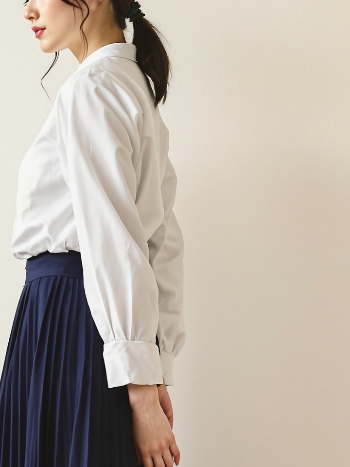
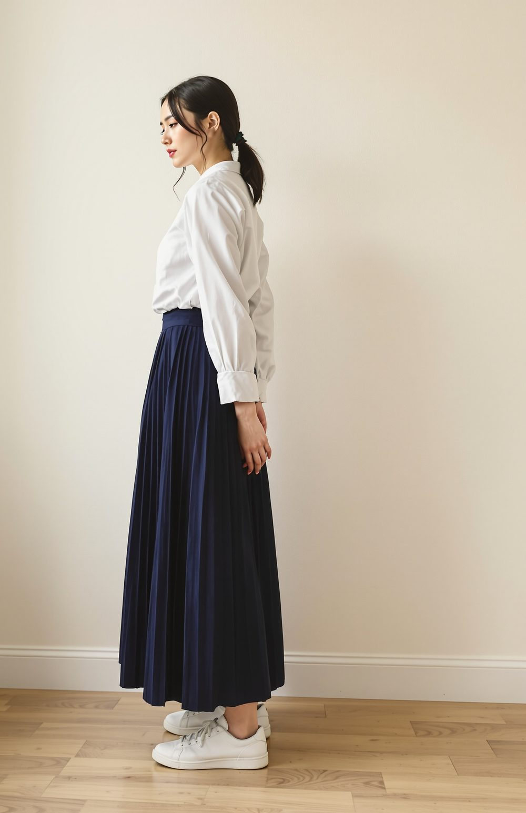
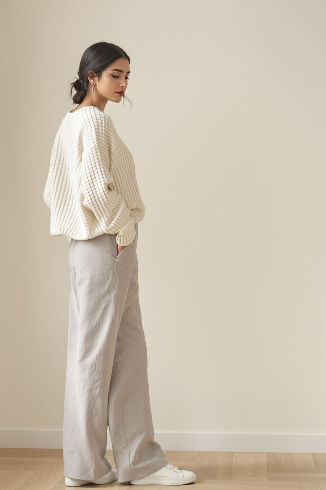
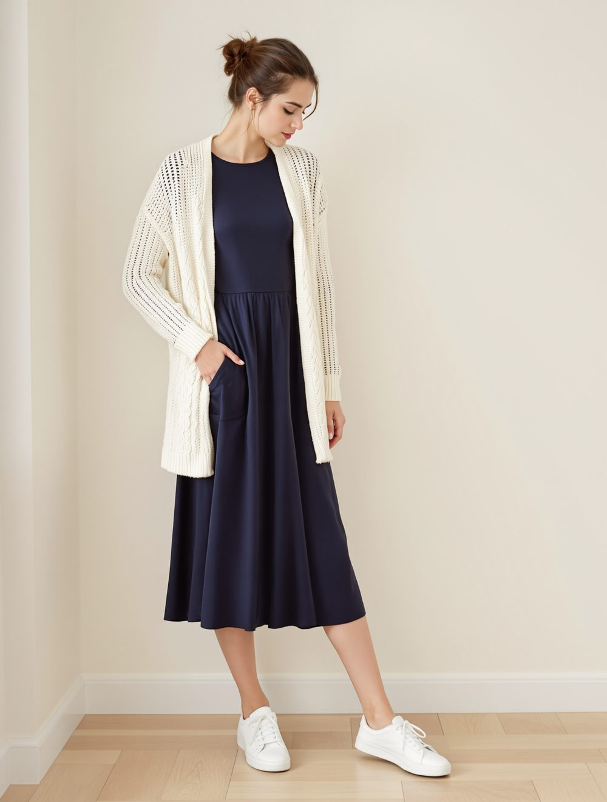
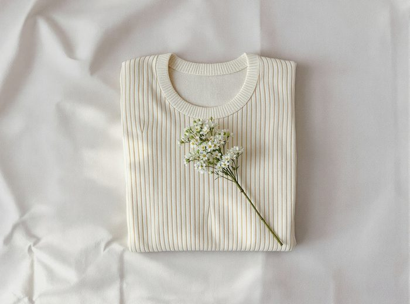
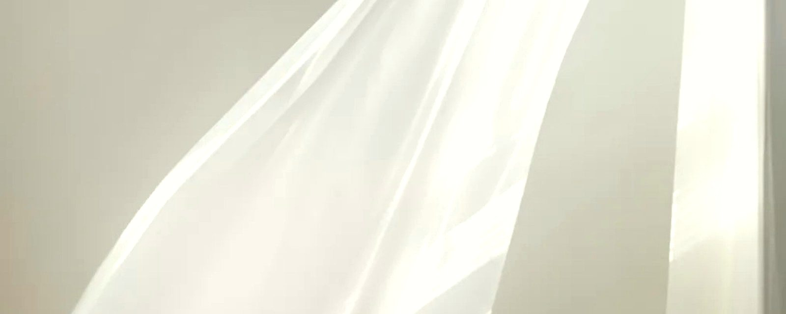
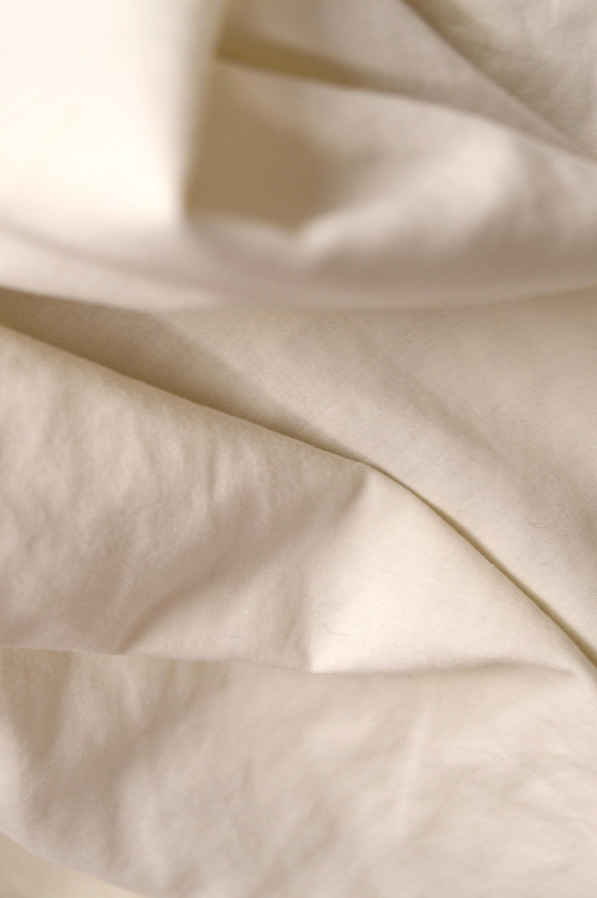
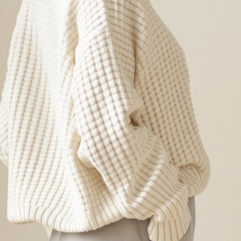
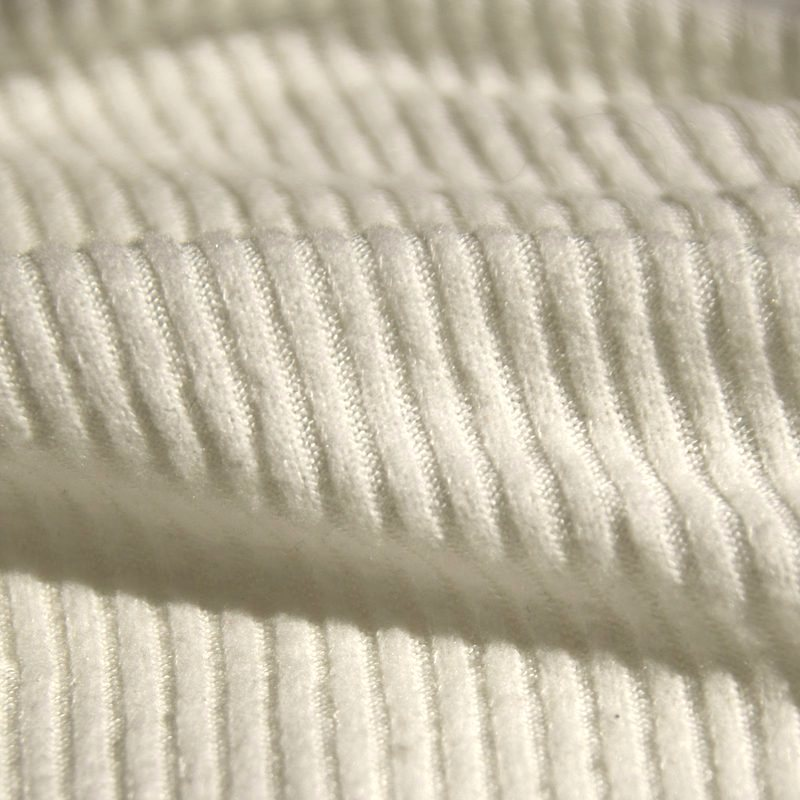
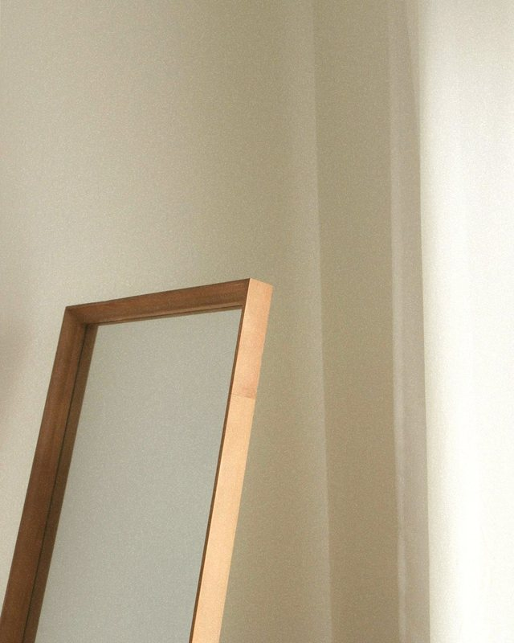

2026 秋冬の新作
三つの着こなし
どれも、白いスニーカーで歩ける服です。
-

イメージ（生成AI） モデル 163cm・サイズ1 01
まっすぐな白
通勤や面談の日に。襟は小さく、袖口は二つボタン。スカートのひだは洗っても戻ります。ブラウスは02のワイドパンツとも合います。
- 綿ブロードのブラウス白綿100%・目が詰んで透けにくい・着丈64cm（サイズ1） 色：白・生成り14,300円（税込）
- プリーツのロングスカート紺ポリエステル100%（ひだ加工）・後ろゴム・裏地あり・丈84cm（サイズ1） 色：紺・生成り19,800円（税込）
寸法とお手入れ（01の着こなし）
寸法（cm） サイズ1 サイズ2 ブラウス 着丈 64 67 ブラウス 身幅 52 56 ブラウス 袖丈 56 57 スカート 丈 84 87 お手入れ：手洗いの設定で洗えます。ブラウスは軽くアイロンを。
二つ合わせて34,100円（税込）・送料無料01の着こなしをストアで見る
-

イメージ（生成AI） モデル 165cm・サイズ1 02
やわらかい生成り
週末の買い物や、カフェへ。ニットは肩を落とした形。パンツは張りのある麻混で、秋は厚手の靴下と、春先まで長くはけます。ニットは01のスカートに合わせても。
- ワッフル編みの
ニット 生成り残り12枚ウール70%・ナイロン30%・透けない・着丈58cm（サイズ1） 色：生成り・紺16,500円（税込） - 麻混のワイドパンツ淡い灰麻55%・綿45%・後ろゴム・股下70cm（サイズ1） 色：淡い灰・生成り15,400円（税込）
寸法とお手入れ（02の着こなし）
寸法（cm） サイズ1 サイズ2 ニット 着丈 58 61 ニット 身幅 62 66 ニット 袖丈 52 53 パンツ 股上 29 30 パンツ 股下 70 72 パンツ ヒップ 96 102 お手入れ：手洗いの設定で洗えます。ニットは形を整えて平らに干してください。
二つ合わせて31,900円（税込）・送料無料02の着こなしをストアで見る
- ワッフル編みの
-

イメージ（生成AI） モデル 164cm・サイズ2 03
紺に、ひと匙の白
食事の約束や、少しきちんとした日に。ワンピースは脇にポケット付き。カーディガンは軽い透かし編みで、01のブラウスに羽織っても。
- 丸首のワンピース紺ポリエステル100%・裏地あり・着丈112cm（サイズ2） 色：紺のみ22,000円（税込）
- 透かし編みの
カーディガン 生成り綿80%・ウール20%・透かし編みのため下に一枚重ねて・着丈70cm（サイズ2） 色：生成り・白18,700円（税込）
寸法とお手入れ（03の着こなし）
寸法（cm） サイズ1 サイズ2 ワンピース 着丈 112 115 ワンピース 身幅 48 52 ワンピース 袖丈 57 58 カーディガン 着丈 70 73 カーディガン 身幅 58 62 お手入れ：手洗いの設定で洗えます。カーディガンは平らに干してください。
二つ合わせて40,700円（税込）・送料無料03の着こなしをストアで見る
品名を押すと、ストアの商品ページへ進みます（見本ではストアの欄へ）。
サイズの目安
| 身長159cmまで | サイズ1 |
|---|---|
| 身長160〜164cm | すっきりならサイズ1、ゆったりならサイズ2 |
| 身長165cmから | サイズ2 |
| バスト | サイズ1：78〜84cm サイズ2：84〜90cm |
| ウエスト | サイズ1：64〜68cm サイズ2：68〜74cm |
| ヒップ | サイズ1：88〜94cm サイズ2：94〜100cm |
スカートとパンツは後ろゴム入り。サイズ2は、トップスとワンピースの着丈が約3cm、身幅が約4cm大きくなります。
サイズが合わなかったら？
届いてから8日以内なら、送料をこちらで持って交換します。タグを付けたままお送りください。
考え方
白は、
手のかかる色です。
汚れが目立つ。透けやすい。洗うたびに少しずつくすむ。それでも白を着たい人のために、生地は目の詰んだものだけを選び、透けにくい厚みと、家で洗える仕立てにしています。
流行の形は追わず、長く着られる線を、一着ずつ確かめてから出しています。


十年後も、着たい白。
素材のこと
指でつまんで、
確かめた糸で。
ワッフル編みのニットは、国内の小さな編み工場で一度に80枚ずつ編んでいます。毛玉になりにくい撚りの強いウールに、ナイロンを三割混ぜて、洗っても形が崩れにくくしました。ブラウスは糸の細い綿ブロードを目を詰めて織り、白でも透けにくく。プリーツとワンピースは、家で洗ってもひだと形が戻るポリエステルを選んでいます。



三つのお約束
長く着てもらうために
- 一
家で洗える白
どの服も、洗濯機の手洗いの設定で洗えることを確かめてから出しています。洗い方は、服のタグとストアの各ページに書いています。
- 二
三年間のお直し
ほつれ、ボタンの付け直し、裾上げは、お買い上げから三年間無料。お送りいただく送料はご負担、お返しの送料は当店が持ちます。
2025年は417着をお直ししました
- 三
作りすぎない
一つの形を80枚ほどずつ。売り切れたら、季節が一巡りしてからまた作ります。
お知らせ
最近のこと
ワッフル編みのニットは、生成りが残り12枚になりました。
アトリエに、秋冬の6型がすべてそろいました。生成りのニットは、袖を通して編み目の軽さを確かめてみてください。
2026 秋冬の三つの着こなしを公開しました。

アトリエで試着
着てから、
決めてください。
アトリエでは、すべての服を試着できます。一組ずつのご案内なので、ほかのお客さまを気にせず鏡の前で迷えます。
- 場所
- 見本県見本市 見本町2-14 二階（見本駅から歩いて6分）
- 開いている日
- 木曜〜日曜 11:00〜18:00
- 試着のご予約
- Instagram のメッセージで日時をお知らせください。予約なしでも、空いていればそのまま試着できます（30分ほど）。
例：「11月7日（土）の14時ごろ、着こなし02のニットを見たいです」
見本のため、押すとストアの欄へ移ります。
白が黄ばんできたら？
お直しと同じく三年間、ぬるま湯と酸素系の漂白剤での洗い方をご案内します。アトリエに持ち込んでいただければ、状態を見てお伝えします。
オンラインストア
服はすべて、BASE のオンラインストアでお求めいただけます。
新作のお知らせは、Instagram で先にお届けしています。
- 送料 600円（15,000円以上は無料）
- ご注文から3日以内に発送
- サイズ交換の送料は当店負担（届いて8日以内）
- お支払いはカード・コンビニ払い・後払いなど（BASE）
- サイズ以外のご返品も、未着用で8日以内なら承ります（送料はご負担）
見本のため、ボタンは外のお店には進みません。
本番では、BASE の商品ページとInstagram につなぎます。